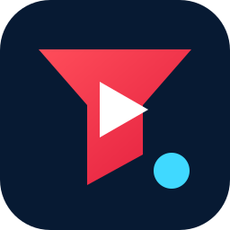
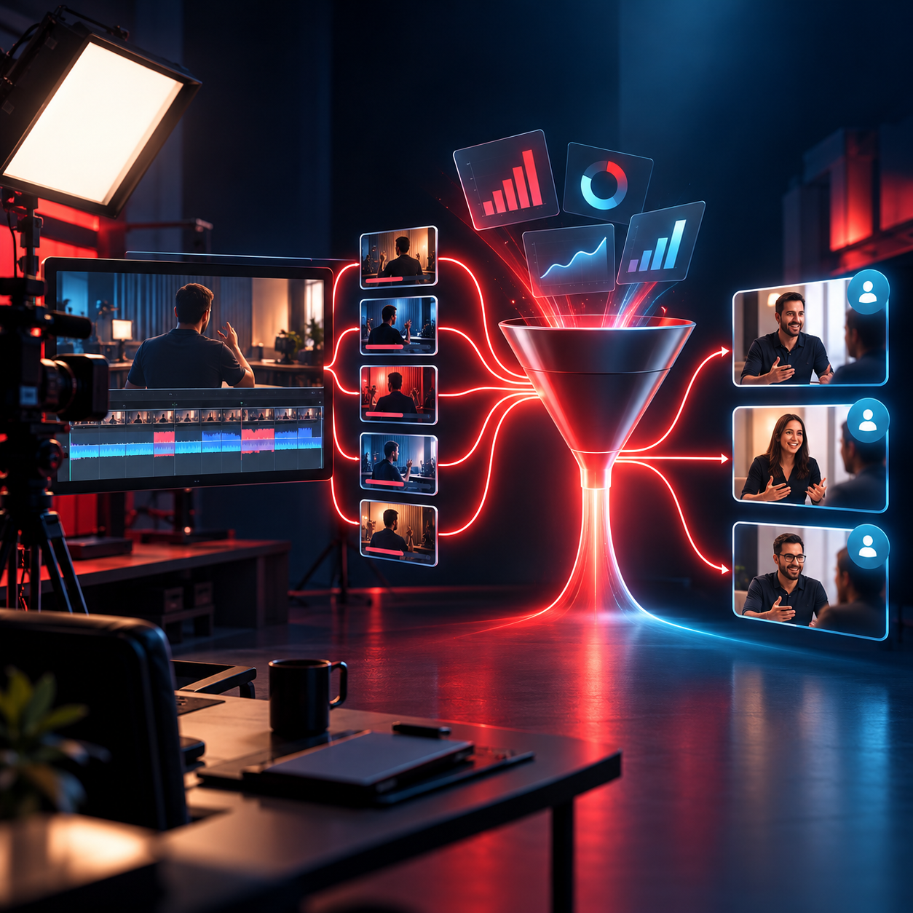

Attract
Package a real buyer problem into a click-worthy promise.

YouTube Funnels Apply for a funnel audit ↗The YouTube Client Engine connects positioning, long-form authority, retention and conversion—so the right viewers become qualified strategy calls.

Cover preview. Connect the approved VSL before publication.
Calendar link not connected yet. Add the approved booking link before publication.
Package a real buyer problem into a click-worthy promise.
Engineer the episode around the questions buyers need answered.
Repurpose the strongest moments without diluting the point of view.
Move qualified viewers into a focused strategy-call journey.
VIEWS ARE NOT THE FINISH LINE
“Your channel should teach prospects how you think before your sales team ever meets them.”